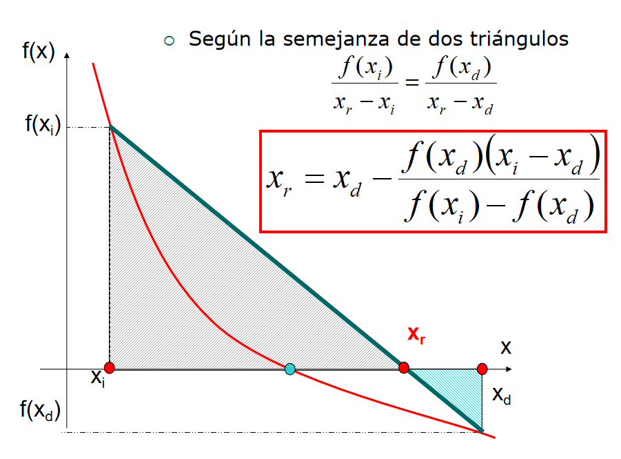
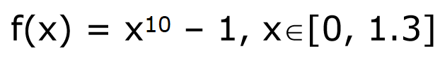
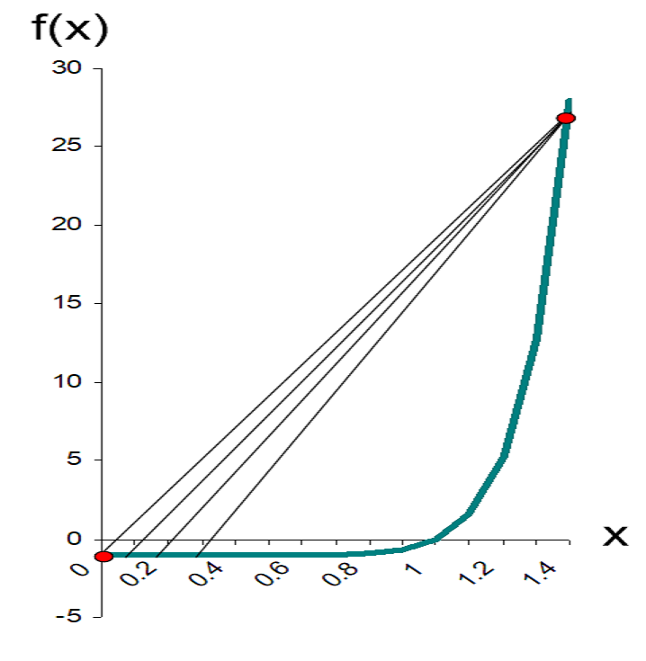

Método de Falsa Posición (o Regula Falsi)
- Consideremos una función f continua en un intervalo [xi, xd] y tal que f(xi)f(xd)< 0
- El método de Posición Falsa, para encontrar una aproximación de una raíz α ∈(xi, xd) de f(x)= 0 , es similar al método de Bisección en el sentido de que se generan subintervalos que encierran a la raíz α, pero esta vez xr no es el punto medio del intervalo, sino el punto de intersección de la recta que pasa por los puntos (xi, f(xi)) , (xd, f(xd)) con el eje x
- Al reemplazar la curva por una recta se obtiene una "posición falsa" de la raíz, de aquí el nombre del método. También se le conoce como método de Interpolación Lineal Inversa

Algoritmo del método de Falsa posición
PASO 1
Determinar el intervalo que encierra la raíz
PASO 2
Calcular el valor de la raíz aproximada según la formula, es decir calcular el valor del punto de cruce de la línea que une f(xi) y f(xd) con el eje x
PASO 3
Determinar si el valor encontrado es una solución al problema
- Si la respuesta es si – finalizar los cálculos
- Si la respuesta es no – comparar los signos de las funciones en los extremos del intervalos con el signo de la función de la raíz aproximada. Eliminar el intervalo que no encierra la raíz y repetir el procedimiento
Falsa posicion vs Bisección
Este método tiene la desventaja, con respecto al método de Bisección en caso de que la longitud del subintervalo que contiene a la raíz no tiende a cero (funciones cóncavas hacia arriba o hacia abajo) en la vecindad de la raíz, lo que hace que uno de los extremos de los subintervalos se aproxime a la raíz, mientras el otro permanece fijo
- En algunos casos funciona de manera ineficiente
- Unilateralidad – conforme se avanza en las iteraciones, uno de los puntos limites permanece fijo
- Por ejemplo: 
